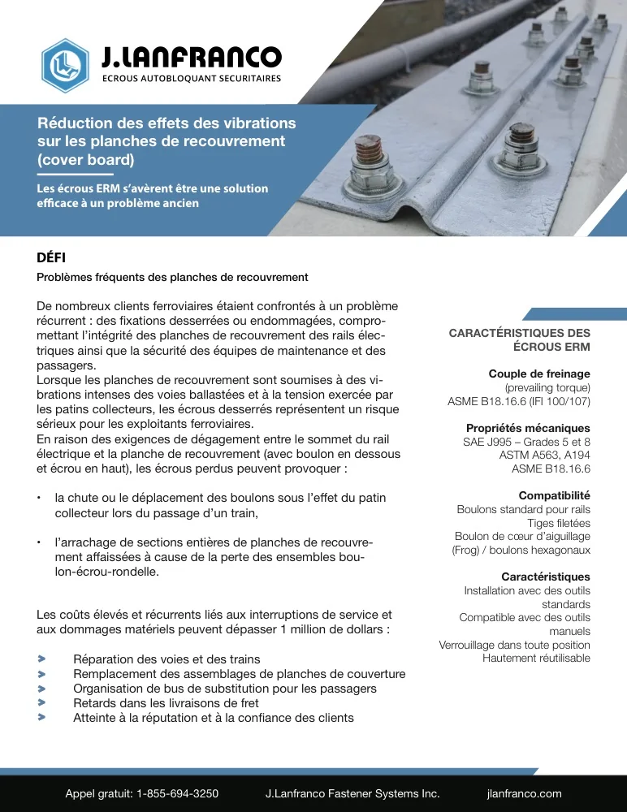
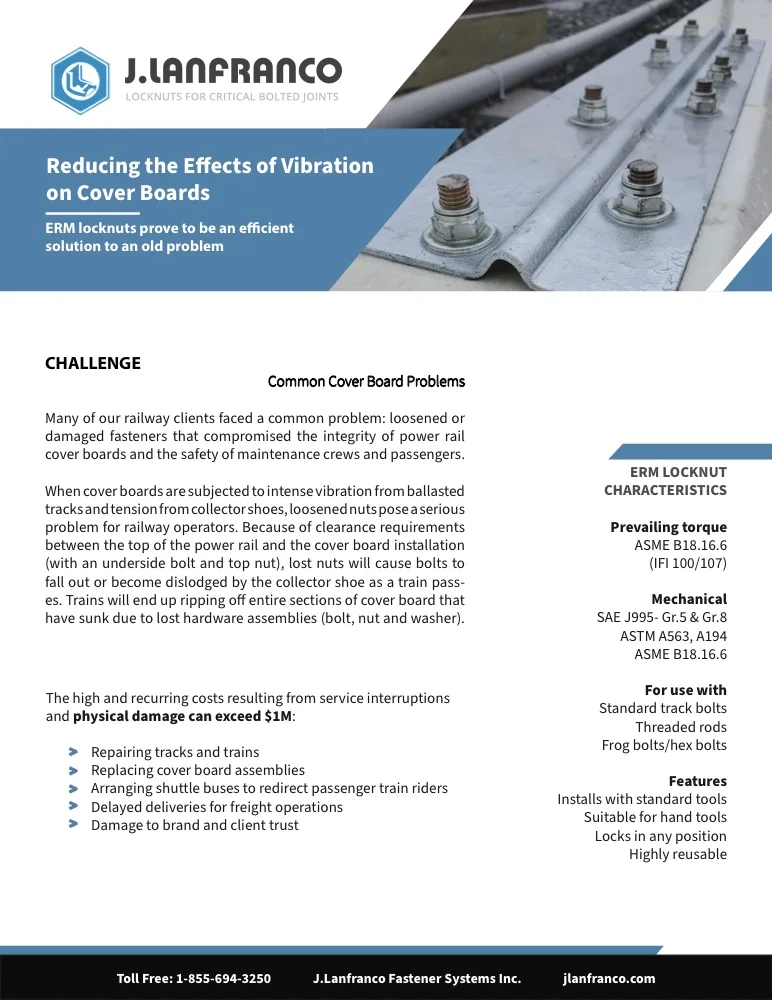
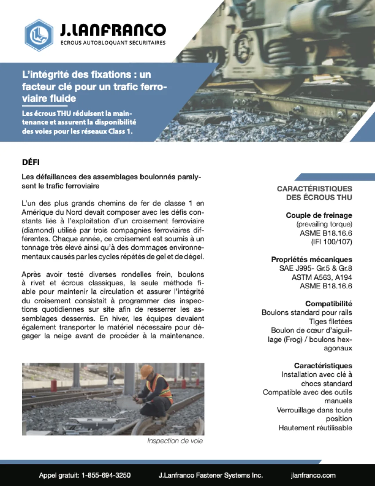
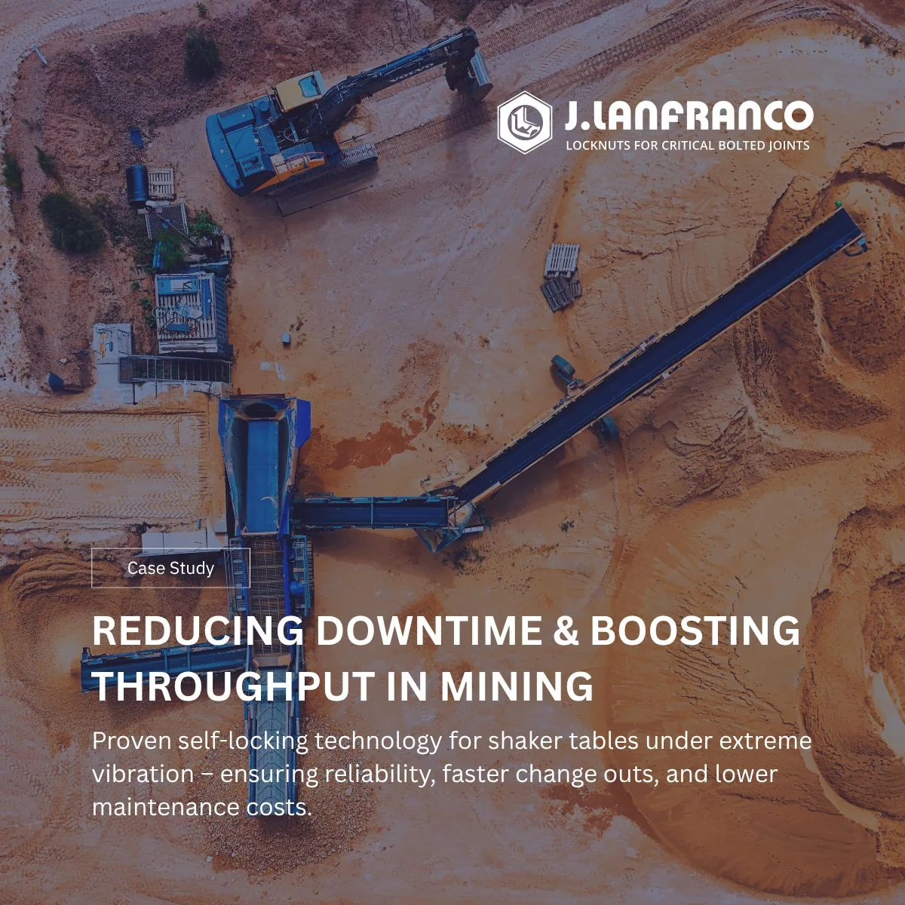
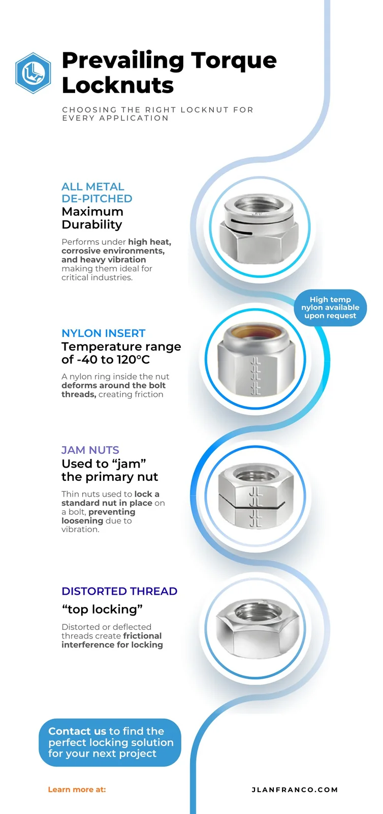
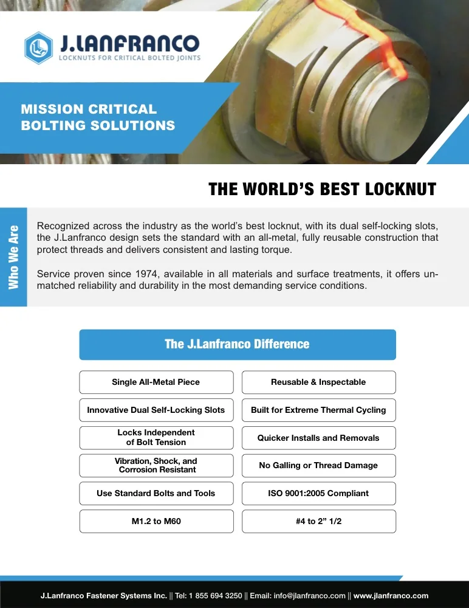
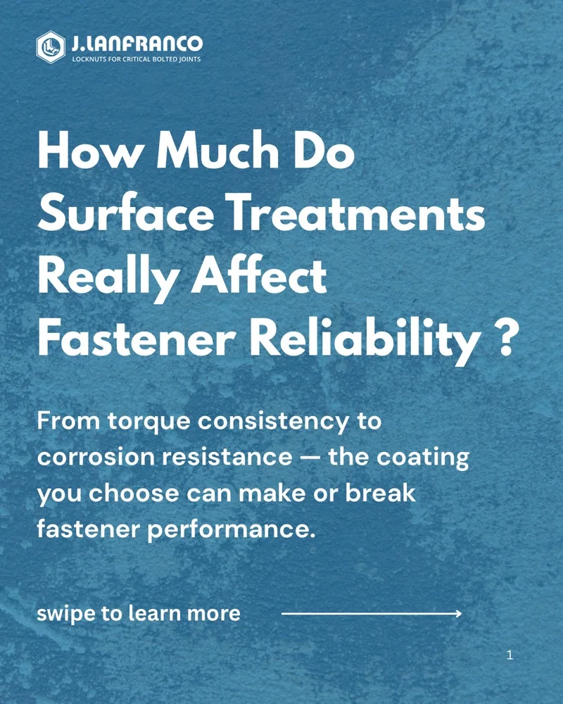
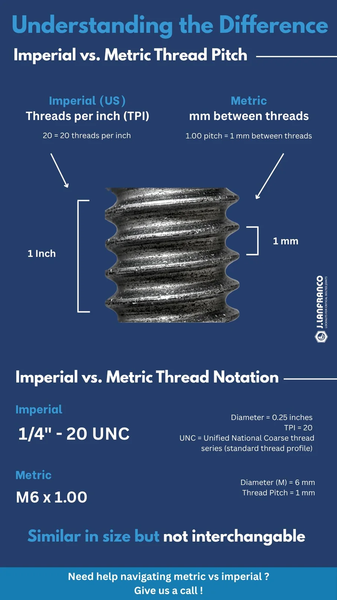
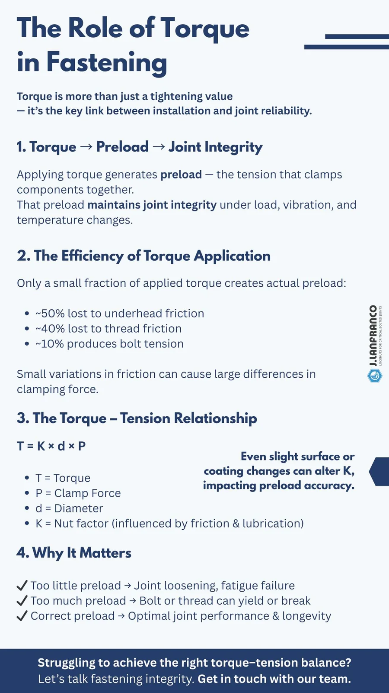

J.Lanfranco Fastener Systems
Portfolio de travauxWork portfolio
Une sélection de supports réalisés pour la filiale nord-américaine de J. Lanfranco & Cie, fabricant français de pièces de sécurité : études de cas, guides produit, infographies et visuels d'annonce.
A selection of materials made for the North American arm of J. Lanfranco & Cie, a French maker of safety components: case studies, product guides, infographics and announcement graphics.
Études de casCase studies


Étude de cas · PDFCase study · PDF Planches de recouvrement du rail d'alimentationPower rail cover boards 
Étude de cas · PDFCase study · PDF, French Croisement ferroviaire (diamond)Diamond crossing 
Visuel d'annonceAnnouncement graphic Étude de cas : les minesCase study: mining

Guides produitProduct guides

Guide produit · PDFProduct guide · PDF Écrous freinés prevailing torquePrevailing torque locknuts 
Guide produit · PDF, anglaisProduct guide · PDF Comment fonctionnent les fixations autobloquantesHow self-locking fasteners work 
Guide · PDF, anglaisGuide · PDF Traitements de surface et fiabilité des fixationsSurface treatments and fastener reliability
InfographiesInfographics

InfographieInfographic Pas de filetage : impérial ou métriqueImperial vs metric thread pitch 
InfographieInfographic Le rôle du couple de serrageThe role of torque in fastening